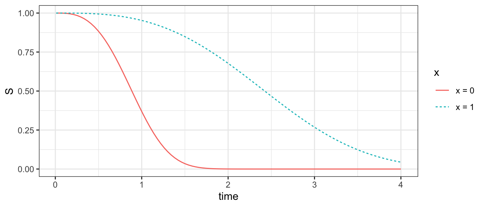

Like the Exponential, the Weibull is a distribution defined on positive real numbers. The Weibull is commonly used in survival analysis because it produces a hazard function that can increase with time or decrease with time. The Weibull hazard is always monotonic (either always increasing or always decreasing, or flat). The distribution functions in R are *weibull with * being d, r, q, or p.
These functions parameterize the Weibull with two parameters: shape and scale.
The shape determines how the hazard function changes with time. Below are Weibull hazards with several shape parameters and with fixed scale = 1.
We can then fit a Weibull survival model with the survreg function,
model <-survreg(Surv(t, 1- c) ~ x,data = simulated,dist ="weibull")
and we can confirm that the estimated parameters match their true values. First, we extract the shape parameter \(\hat\alpha\) which (confusingly) is the inverse of the scale element of the fitted model.
alpha_estimate <-1/ model$scale
Then, we can extract the coefficients \(\hat{\vec\beta}\).
Finally, we can convert to quantities of interest. For example, what is the estimated survival function from time 0 to 10 in each group?
First, define the groups for which to make predictions.
to_predict <-tibble(x =0:1)
Then, predict the scale and shape parameters from the model. Note that you can calculate the scale parameter manually by extracting \(\hat{\vec\beta}\) as we did above, or you can use predict() with the argument type = "linear" to automatically predict the value of the linear predictor \(\vec{X}'\vec\beta\) (which is the log of the scale parameter, since scale = \(\exp(\vec{X}'\vec\beta)\).
At this point, each row of predicted_parameters corresponds to a person. We want to expand to person-periods.
predicted_survival <- predicted_parameters |>group_by(x) |># Create 100 copies of each lineuncount(weights =100) |># Create a sequence over the times to predictmutate(time =seq(from =0.01, to =4, length.out =100) ) |># Calculate the survival probability at that timemutate(S =pweibull(q = time,shape = shape,scale = scale,lower.tail =FALSE ) )
We can plot those survival curves!
predicted_survival |># Make x a character for easier plottingmutate(x =paste("x =",x)) |>ggplot(aes(x = time, y = S, color = x, linetype = x)) +geom_line()
See differences from Exponential
You may wonder how your Weibull model differs from an Exponential model. The hazard may change over time in the Weibull, whereas it would be constant in the Exponential. We can see the Weibull result by predicting the hazard function,
predicted_hazard <- predicted_survival |>mutate(# Calculate the PDF at each pointf =dweibull(x = time, shape = shape, scale = scale),# Hazard equals PDF over survivalh = f / S )
and plotting it as a function of time.
predicted_hazard |># Make x a character for easier plottingmutate(x =paste("x =",x)) |>ggplot(aes(x = time, y = S, color = x, linetype = x)) +geom_line()

In this simulated example, the hazard function decreases with time.
To see the difference mathematically, note that the Weibull hazard wtih shape \(\alpha\) and scale \(\sigma\) is as follows. \[
h(t) = \alpha^{\alpha - 1}\sigma^{-\alpha}t^{\alpha - 1}
\] Think about the particular case when \(\alpha = 1\). Two of the exponents become 0 so that \(\alpha^{\alpha - 1} = \alpha^0 = 1\) and \(t^{\alpha - 1} = t^0 = 1\) and those terms drop out. The hazard becomes a constant function \(\sigma^{-1}\). \[
h_{\alpha = 0}(t) = \sigma^{-1}
\] This hazard is equivalent to an Exponential hazard, where \(\sigma = \frac{1}{\lambda}\) with \(\sigma\) the scale (larger for longer survival times) and \(\lambda\) is the rate of events (larger for shorter survival times). Thus, the Weibull with \(\alpha = 1\) is an exponential.
We might want to test to reject the null that \(\alpha = 1\) in our Weibull model. Note that the shape parameter \(\alpha\) is 1 / model$scale where model is a Weibull fitted with survreg and scale is what survreg calls the relevant parameter. The Exponential is thus the special case where model$scale = 1, or equivalently the log of the survregscale parameter equals zero. There is a statistical test of this in the output of summary(model).
summary(model)
Call:
survreg(formula = Surv(t, 1 - c) ~ x, data = simulated, dist = "weibull")
Value Std. Error z p
(Intercept) 0.00115 0.00481 0.24 0.81
x 1.00597 0.00666 151.12 <2e-16
Log(scale) -1.10014 0.00782 -140.73 <2e-16
Scale= 0.333
Weibull distribution
Loglik(model)= -7851.7 Loglik(intercept only)= -13167.8
Chisq= 10632.29 on 1 degrees of freedom, p= 0
Number of Newton-Raphson Iterations: 6
n= 10000
In this case, we can easily reject the null that Log(scale) equals 0. There is significant evidence that the Weibull fits the data better than the Exponential.
We might want a confidence interval on the \(\alpha\) shape parameter. To do that, we first extract the log scale estimate and standard error from the survreg model.
Finally, we convert: the scale parameter is the exponentiated log scale parameter, and the rweibull\(\alpha\) parameter shape is the inverse of the survreg parameter scale. Thus, we convert everything by the function \(1 / \exp(x)\).